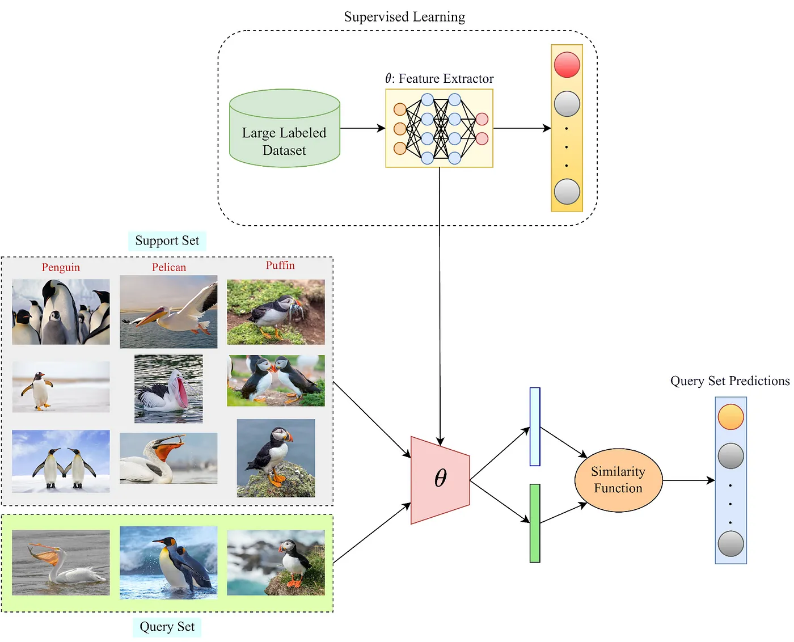

If you aren’t already familiar with it, few-shot learning (FSL) is an exciting concept in machine learning that focuses on training models to make accurate predictions or classifications when provided with only a very limited amount of labeled data for each category or class. Unlike traditional machine learning approaches that often require substantial labeled datasets for training, few-shot learning aims to address scenarios where acquiring such extensive labeled data is impractical or costly.
In few-shot learning, the model is trained to generalize effectively from a small number of examples (or shots) per category, allowing it to make predictions for new, unseen data points with confidence. This capability is particularly valuable in situations where data is scarce, and manual annotation is labor-intensive or expensive. Refer to [1] for an in-depth survey in this field.
In this blog, I’m going to show you how to implement a basic few-shot classification technique for text.
Terminology
Before we begin, let us familiarize ourselves with the correct terminology.
What characterizes FSL is having only a few examples at hand, for unseen classes, during inference. So basically we are showing the model only a few examples of a class which it may or may not have encountered during its pre-training before we make predictions using that model.
Support Set, 𝒮: The few annotated examples that we have, make up the support set, with which we may or may not update the model weights to make it generalize to the new classes.
Query Set, 𝒬: The query set consists of our test set, i.e. the samples we want to classify using the base model and a support set.
N-way K-shot learning scheme: This is a common phrase used in the FSL literature, which essentially describes the few-shot problem statement that a model will be dealing with. “N” is the number of classes we have at test time and “K” is the number of samples per class we have in our support set “𝒮”
1-shot classification: When K=1, i.e. we have only one labeled sample available per class.
0-shot classification: K=0, i.e. we do not have any labeled samples available during inference.
Let us have a look at an example.
Code
# sample set is 3-way, 3-shot.classes = ['camera', 'battery', 'display']sample_set = {'camera': ['absolutely love this quality of my photos!!','it even gives great quality in dim lighting. fabulous!!','the camera should be much better for such a high price' ],'battery': ["The battery life on this device is exceptional! It easily lasts me the entire day with heavy usage.","I'm a bit disappointed with the battery performance. It drains quite quickly, especially when using power-hungry apps.","The battery is decent, not too bad, not too good. It gets me through the day, but I was hoping for better longevity." ],'display': ["The display on this device is stunning! Colors are vivid, and the resolution is top-notch.","I'm not too impressed with the display quality. It seems a bit washed out, and the brightness could be better.","The display is okay, but nothing extraordinary. It gets the job done for everyday tasks." ]}query_set = ["i hate the batteries", "does it give good quality photos in the night?"]
Here we have a 3-way (there are 3 classes), 3-shot (3 examples for each class) setting.
High level design
Let us have a quick look at the architecture of the system.

A simple few shot classification system
This is the flow of our solution:
The first step is to get an embedding module. That can be created using regular supervised learning (Resnets trained on Imagenet) or self-supervised learning (BERT and co). Then, we use the embedding module to get feature representations for our classes in the support set. A simple way to do this is to turn each class’s examples into embeddings and take the mean of those vectors. This then becomes our “prototype” vectors to compare against. Now for each query, we can take the embeddings of the query text and use cosine similarity to find the predicted class. This closely resembles This system basically allows us to leverage transfer learning to use large backbones as our embedding module. And there is also the advantage of not performing any gradient updates. This helps us maintain a much more dynamic and flexible system.
The idea of comparing query samples with the support set samples is inspired by metric learning. Refer to [3, 4] for better understanding.
Let’s implement this using the transformers library. You can find the implementation in this colab notebook.
Implementation
Let’s start with the good old BERT base model.
1. Import libraries and download model
Code
from transformers import AutoTokenizer, AutoModelimport torchimport numpy as npfrom typing import Dictfrom pprint import pprintimport warnings warnings.filterwarnings("ignore")if torch.backends.mps.is_available(): device = torch.device('mps')else: device = torch.device('cpu')# load the model and tokenizertokenizer = AutoTokenizer.from_pretrained('bert-base-uncased')model = AutoModel.from_pretrained("bert-base-uncased")
2. Tokenize and encode a sentence
Code
text ="He's such a great guy!!"encoded_input = tokenizer( text, return_tensors='pt', padding='max_length', # True will pad to max-len in batch max_length=32)print(f"encoded input:")pprint(encoded_input)
token_type_id: When we pass two sentences for downstream fine-tuning in BERT, this is used to identify which token belongs to which sentence.
attention_mask: which tokens to ignore. As you’ll see, the padding tokens have been masked.
3. Generate embeddings using model
The output has 2 parts, cls_token_embeddings and last_hidden_states of the tokens. We can either use the cls_embeddings to represent the sentence or pool the vectors in last_hidden_states. The pooling can be max/min/mean.
The dimension of the output will be equal to the embedding dimension of the model, i.e. 784 in our case.
Code
def get_embeddings(model, tokenizer, text, pooling='mean'): encoded_input = tokenizer( text, return_tensors='pt', padding='max_length', max_length=16, truncation=True ) encoded_input = encoded_input.to(device) model.to(device) model.eval()with torch.no_grad(): output = model(**encoded_input) last_hidden_state, pooler_output = output[0], output[1]if pooling=='cls': embedding = pooler_outputelse:# ignore the pad tokens embeddings by multiplying with attention mask last_hidden_state = (last_hidden_state * encoded_input['attention_mask'].unsqueeze(2)) embedding = last_hidden_state.mean(dim=-2)return np.array(embedding.cpu())embeddings = get_embeddings(model, tokenizer, 'hey there! how are you?')print(f"shape of embeddings: {embeddings.shape}")
shape of embeddings: (1, 768)
4. Prepare the prototypes:
To prepare the class prototypes we’ll take the mean of the sentences for each class.
To classify a query text, we can run cosine similarity against the prototype vectors and return the argmax as the most probable class!
Code
def classify(model, tokenizer, text, prototype_vectors=None, sample_set=None):if prototype_vectors==None:assert sample_set!=None, "prototype vectors are not passed, either pass a sample set prototype vectors" prototype_vectors = make_prototypes(sample_set) query_embeddings = get_embeddings(model, tokenizer, text) prototype_matrix = np.stack(list(prototype_vectors.values())) scores = sentence_transformers.util.cos_sim(query_embeddings, prototype_matrix)return scores
Using the above-defined functions and the sample set from before, we have:
Code
prototype_vectors = make_prototypes(model, tokenizer, sample_set)query_text ="i hate the batteries"output = classify(model, tokenizer, query_text, prototype_vectors=prototype_vectors)print(f"output: {output}")print(f"the predicted class is {classes[output.argmax().item()]}")
output: tensor([[0.6121, 0.7127, 0.6388]])
the predicted class is battery
A bit strange! Although the expected class is predicted, scores for other classes are also high. Let’s try a harder query.
Code
query = ['does it give good quality photos in the night?']output = classify(model, tokenizer, query, prototype_vectors=prototype_vectors)print(f"output: {output}")print(f"the predicted class is {classes[output.argmax().item()]}")
output: tensor([[0.7984, 0.7043, 0.7647]])
the predicted class is camera
Although the highest similarity is for ‘camera’, the similarity should be much higher.
The results do not get better even if we try cls-pooling. This only means that the embeddings produced by the model do not give us an accurate representation of the sentence.
We would then do good to remember that BERT pre-train was trained by MaskedLM, NextSentencePrediction, hence the original purpose of BERT is not to create a meaningful embedding of the sentence but for some specific downstream task. In fact, as the authors of the sentence-transformer paper [2] point out, out-of-the-box Bert embeddings perform even worse than GLoVE representations!
Jacob Devlin’s comment: I’m not sure what these vectors are, since BERT does not generate meaningful sentence vectors. It seems that this is is doing average pooling over the word tokens to get a sentence vector, but we never suggested that this will generate meaningful sentence representations. And even if they are decent representations when fed into a DNN trained for a downstream task, it doesn’t mean that they will be meaningful in terms of cosine distance. (Since cosine distance is a linear space where all dimensions are weighted equally).
There are a few ways to improve the bert-base for sentence-level tasks and both involve finetuning the model with some data.
adding a linear layer on top and fine-tuning it.
making embeddings better by contrastive learning.
Using sentence transformers
Ultimately, what we need is a better embedding module. Luckily we have such models. As it turns out, contrastive learning is an excellent approach for tuning our models such that different sentences produce semantically different embeddings.
We will explore contrastive learning and its inner workings some other day, but for now, let’s pick up open-source models that have been finetuned using contrastive learning. There is an entire library (aka sentence-transformers) and paper[2] dedicated to this.
We’ll use the sentence-transformers/stsb-bert-base model for our purposes.
1. Import packages and download model
Code
from sentence_transformers import SentenceTransformer# load a sentence transformer modelsts_model = SentenceTransformer('sentence-transformers/stsb-bert-base')model2 = sts_model[0].auto_model.to(device)tokenizer2 = sts_model[0].tokenizer
2. Use the above-defined functions to prepare prototype vectors and classify them in a few-shot setting
Code
prototype_vectors = make_prototypes(model2, tokenizer2, sample_set)query_text ="i hate the batteries"output = classify(model2, tokenizer2, query_text, prototype_vectors)print(f"output: {output}")print(f"the predicted class is {classes[output.argmax().item()]}")
output: tensor([[0.0910, 0.4780, 0.1606]])
the predicted class is battery
Code
query = ['does it give good quality photos in the night?']output = classify(model2, tokenizer2, query, prototype_vectors=prototype_vectors)print(f"output: {output}")print(f"the predicted class is {classes[output.argmax().item()]}")
output: tensor([[0.4467, 0.1012, 0.2998]])
the predicted class is camera
As we can see, the scores seem much more reasonable this time around. There is a much better correlation with the ground truth labels. Using better base models trained in multiple tasks further improves the performance of these models.
Conclusion
This brings us to the end of this blog. In summary, we explored the realm of few-shot learning, a machine-learning approach tailored for accurate predictions with limited labeled data. Initially, we employed BERT, but its design didn’t align with our objectives. Instead, we leveraged a model fine-tuned for sentence-level tasks, sentence-transformers/stsb-bert-base, which significantly improved our results.
These are a few things to note:
Although we directly used pre-trained models here, an interesting undertaking would be to perform the contrastive fine-tuning ourselves. Also, instead of using cosine similarity, we can train lightweight classifiers on top of our embedding module for better performance.
That’ll be all from my side. Until next time, Happy Reading!